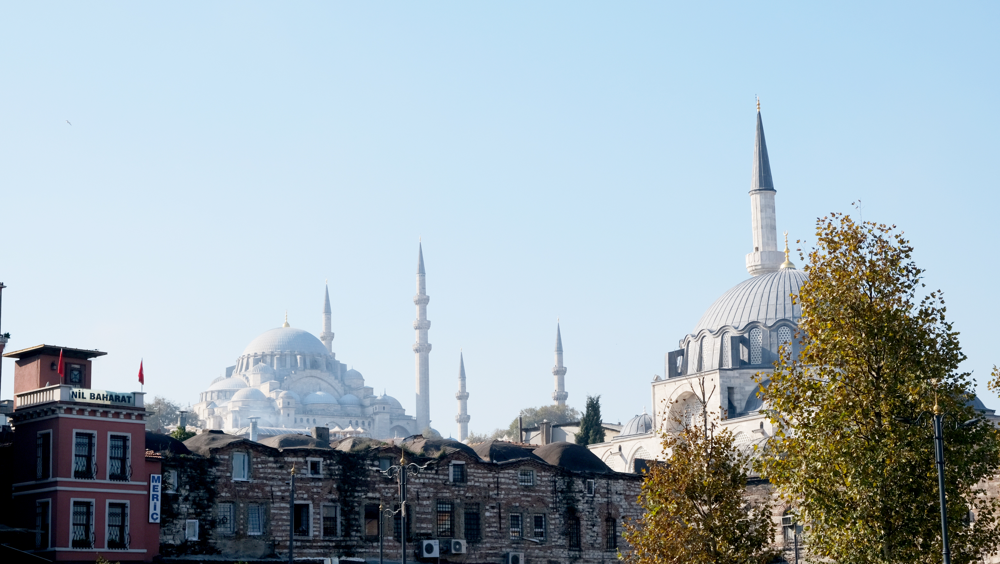
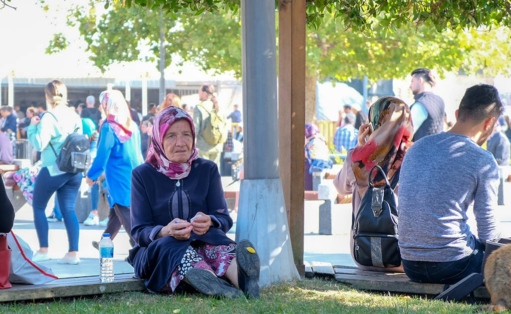
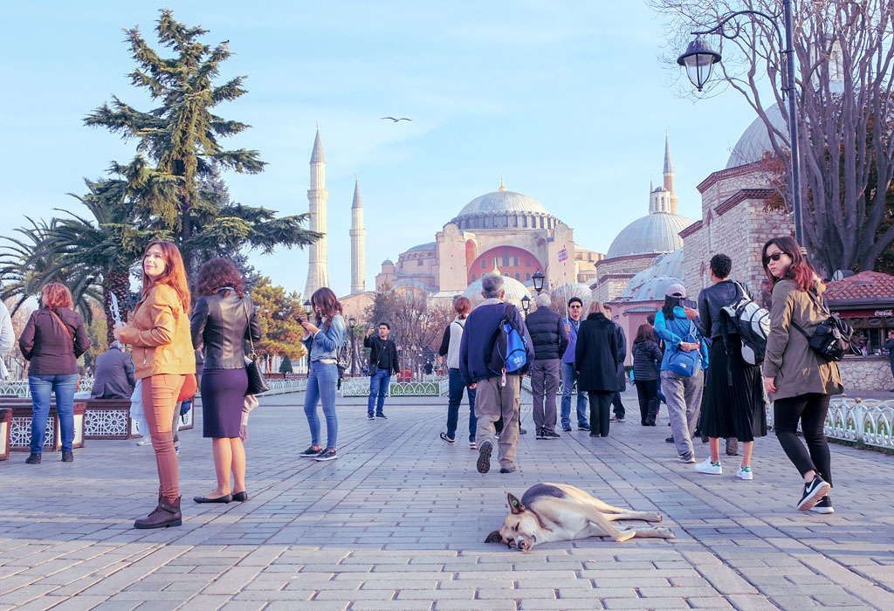
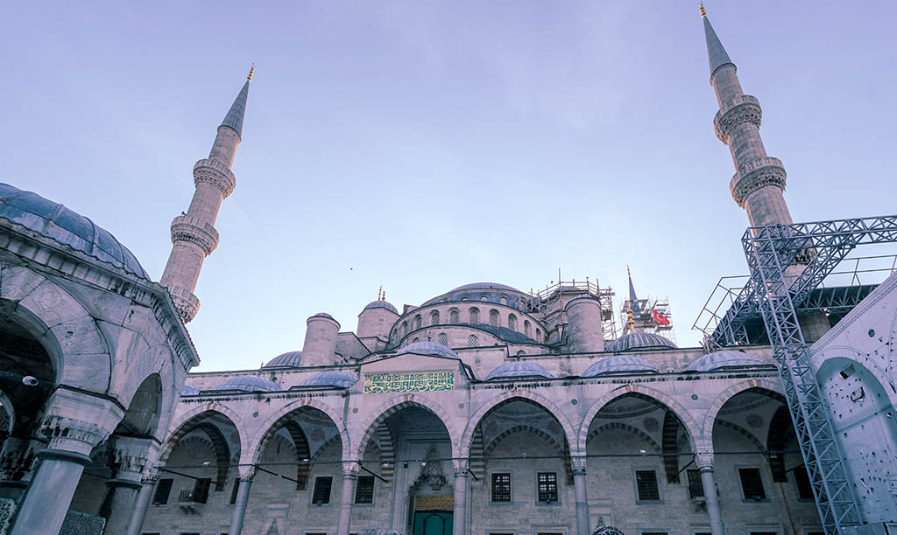
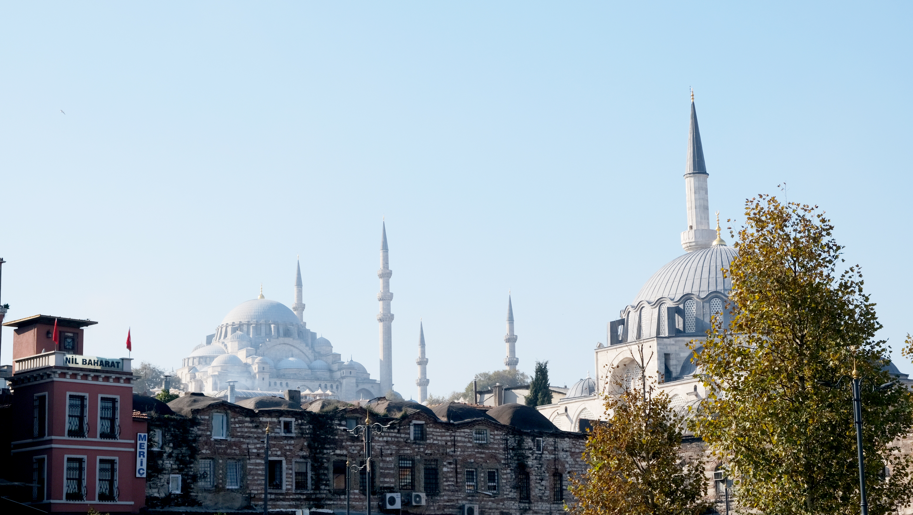
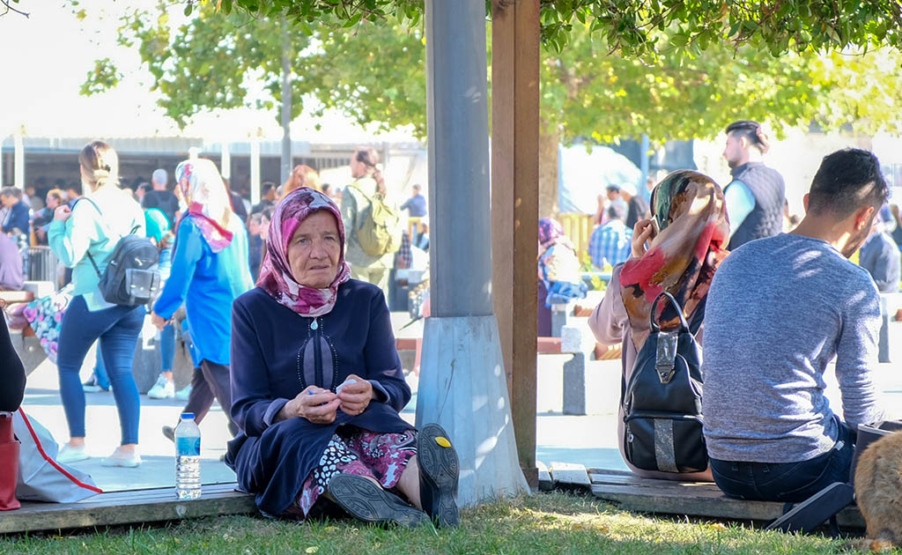
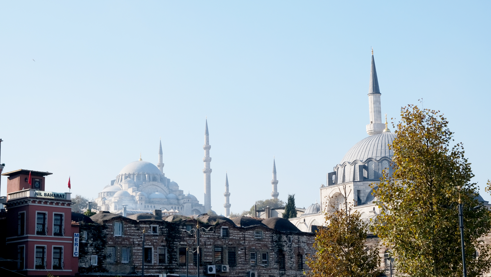
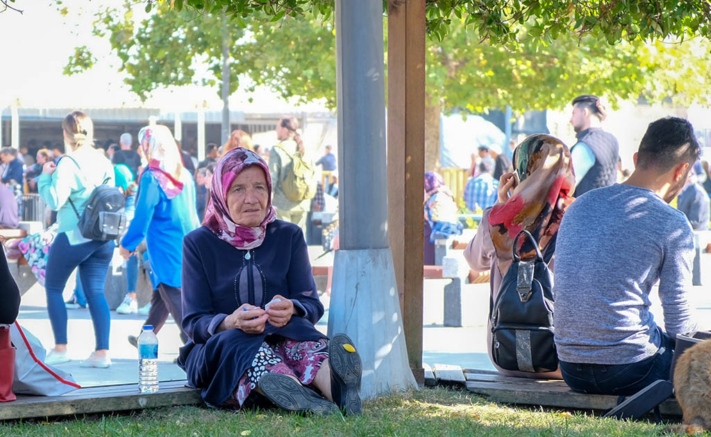

Istanbal
Straddling Asia and Europe across the sprawling Bosphorus Strait, Istanbul is a major city in Turkey which is world-famous for its rich history and culture, stunning scenery, magnificent structures, and a plethora of aspects. A towering marvelous 6th-century dome of iconic Byzantine Hagia Sophia a prominent attraction here. Istanbul is a prominent center of trade and commerce. Numerous merchants, tourists, and locals flock to this enchanting Turkish city in search of exotic things. Besides visiting various tourist attractions, the shopping experience in Turkey is truly outstanding. It features a number of shops, goods, and bazaars where you can find exotic things to buy. So, if you are planning to visit Turkey in the coming holidays, you need to know all unique aspects, ranging from tourist attractions, markets, food, and cuisines, to souvenirs for which Istanbul is world-famous, to experience the true spirit of the city.


Hagia Sophia

Hagia Sophia is well-known for its impressive art and history of exquisite architecture. Constructed in 537 AD, this magnificent monument is popular for its massive dome. For 916 years, this monument was a church. Later, it was converted into the Ottoman imperial mosque for 482 years. And, in 1935, under the order of Atatürk and according to the decision of the Council of Minister, it is converted into an outstanding museum which is visited by several travelers worldwide.
Blue Mosque

Sultan Ahmed Mosque, which is well-known as the Blue Mosque, when holidaying in Istanbul, Turkey. It is a historical mosque and popular as the Blue Mosque due to the presence of blue tiles adorning the walls of its interior design. It was constructed between 1609 and 1616 during the reign of Ahmed I. It comprises a tomb of the founder, a hospice, and a madrasa. If you visit this beautiful mosque at dusk, listen to the call to prayer that echoes out from the minaret of the Blue Mosque. Spot the distinctive tiles of this magnificent mosque.


 


